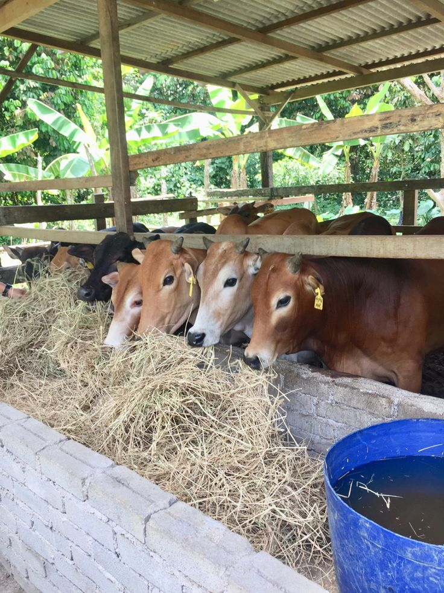

Kurasi Unit
Setiap sapi dicek berdasarkan bobot, usia, postur, dan kesiapan sebelum masuk katalog.
Tentang Farm
suaimi livestock dibangun untuk menghadirkan sapi pilihan dengan standar kesehatan, perawatan, dan pengiriman yang lebih jelas sejak pemilihan hingga sampai di lokasi Anda.

Cerita Kami
Kami berfokus pada kurasi sapi yang sehat, layak, dan mudah diverifikasi. Setiap unit dipilih berdasarkan tampilan fisik, bobot, usia, dan kesiapan pengiriman agar pembeli mendapatkan informasi yang ringkas namun berguna.
Tim farm menjaga perawatan harian, kebersihan kandang, pola pakan, dan koordinasi pengiriman. Tujuannya sederhana: membuat proses beli sapi terasa lebih tenang, transparan, dan profesional.
Setiap sapi dicek berdasarkan bobot, usia, postur, dan kesiapan sebelum masuk katalog.
Pakan, air, kebersihan kandang, dan kondisi visual dipantau agar sapi tetap prima.
Pembeli dapat berkonsultasi untuk memilih sapi sesuai kebutuhan, anggaran, dan jadwal.
Jadwal dan lokasi pengiriman dikonfirmasi agar sapi sampai dengan kondisi baik.
Katalog berisi unit yang sudah dikurasi dengan detail bobot, usia, grade, status, dan tautan reservasi langsung.